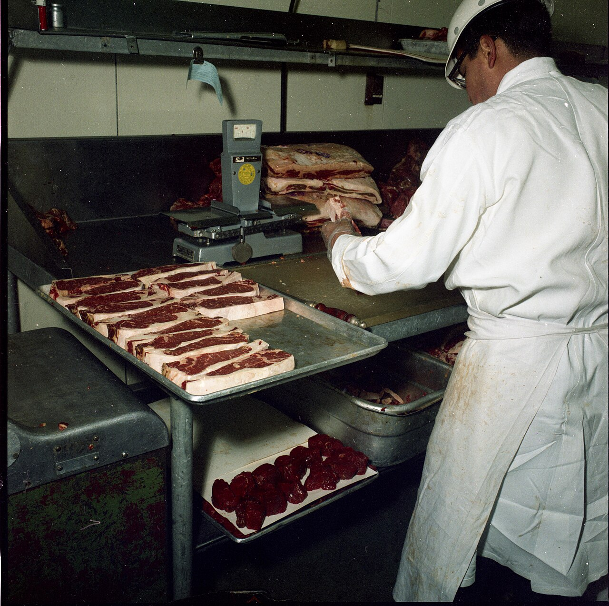
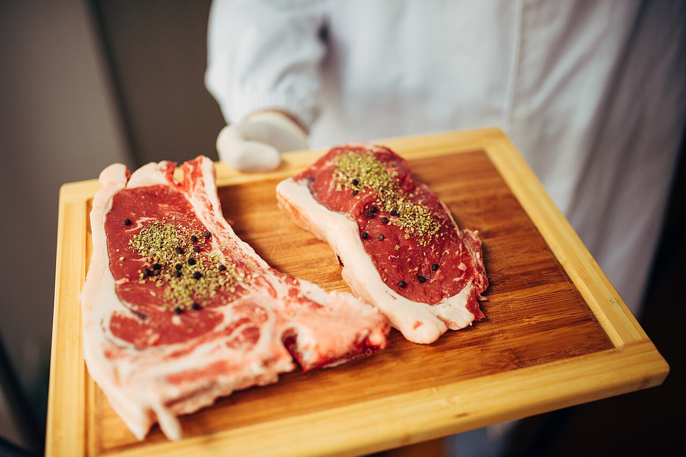

Three Generations of Quality

80,000 sq ft Facility
Our Sioux Falls plant processes over 2 million pounds of meat every month, under strict USDA oversight from harvest to shipment.

Skilled Hands, Sharp Knives
Every primal is broken down by experienced butchers trained to spec — consistent cuts, consistent yield, every order.

Beef, Pork & Poultry
A full wholesale line from ribeye primals to smoked bacon slabs, ready for restaurants, grocers, and distributors.
Why Buyers Choose Ironridge
USDA Establishment #4471
Federally inspected on every shift.
HACCP Certified
Hazard controls built into every process step.
SQF Level 3 Certified
Third-party verified food safety and quality systems.